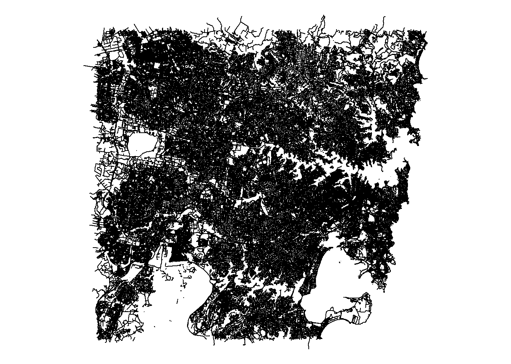
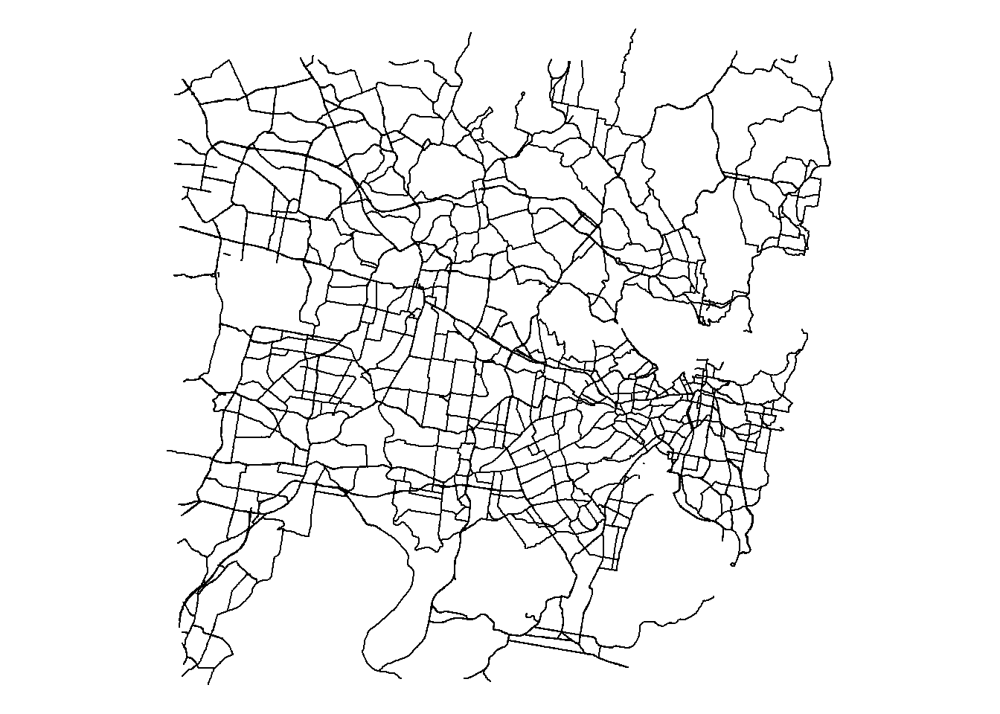

Code
library(osmdata)
library(sf)
library(dplyr)
library(ggplot2)
library(tidyverse)
library(osmextract)In this chapter we will learn how to extract and merge OpenStreetMap data of amenities and road network to the pedestrian count data.
library(osmdata)
library(sf)
library(dplyr)
library(ggplot2)
library(tidyverse)
library(osmextract)location <- "Sydney, Australia"library(osmdata)Data (c) OpenStreetMap contributors, ODbL 1.0. https://www.openstreetmap.org/copyrightamenities_query <- opq(location) |>
add_osm_feature(key = "amenity", value = c("restaurant", "bank", "bar")) Note: We will use only two categories for simplicity of the example. Ideally, more types of amenities should be considered for analysis.
# Set an alternative Overpass server
set_overpass_url("https://overpass-api.de/api/interpreter")
amenities_data <- osmdata_sf(amenities_query)head(amenities_data$osm_points) osm_id name abandoned access
13757642 13757642 Singapore Famous BBQ Pork <NA> <NA>
18323773 18323773 Centennial Homestead <NA> <NA>
18469019 18469019 Randwick Golf Club Restaurant <NA> <NA>
20827957 20827957 Commonwealth Bank <NA> <NA>
20827958 20827958 Citibank <NA> <NA>
20930154 20930154 Basket Brothers <NA> <NA>
addr:block_number addr:country addr:district addr:floor addr:full
13757642 <NA> <NA> <NA> <NA> <NA>
18323773 <NA> <NA> <NA> <NA> <NA>
18469019 <NA> <NA> <NA> <NA> <NA>
20827957 <NA> <NA> <NA> <NA> <NA>
20827958 <NA> <NA> <NA> <NA> <NA>
20930154 <NA> <NA> <NA> <NA> <NA>
addr:housename addr:housenumber addr:place addr:postcode addr:state
13757642 <NA> <NA> <NA> <NA> <NA>
18323773 <NA> <NA> <NA> <NA> <NA>
18469019 <NA> 1 <NA> 2036 NSW
20827957 <NA> <NA> <NA> <NA> <NA>
20827958 <NA> <NA> <NA> <NA> <NA>
20930154 <NA> <NA> <NA> <NA> <NA>
addr:street addr:streetnumber addr:suburb addr:unit
13757642 <NA> <NA> <NA> <NA>
18323773 <NA> <NA> <NA> <NA>
18469019 Howe Street <NA> Malabar <NA>
20827957 <NA> <NA> <NA> <NA>
20827958 <NA> <NA> <NA> <NA>
20930154 <NA> <NA> <NA> <NA>
addr:unit:designation air_conditioning al_fresco alcohol alt_name
13757642 <NA> <NA> <NA> <NA> <NA>
18323773 <NA> <NA> <NA> <NA> <NA>
18469019 <NA> <NA> <NA> <NA> <NA>
20827957 <NA> <NA> <NA> <NA> <NA>
20827958 <NA> <NA> <NA> <NA> <NA>
20930154 <NA> <NA> <NA> <NA> <NA>
alt_name2 alt_name:zh amenity atm atm:cash_in atm:opening_hours
13757642 <NA> <NA> restaurant <NA> <NA> <NA>
18323773 <NA> <NA> restaurant <NA> <NA> <NA>
18469019 <NA> <NA> restaurant <NA> <NA> <NA>
20827957 <NA> <NA> bank yes <NA> <NA>
20827958 <NA> <NA> bank <NA> <NA> <NA>
20930154 <NA> <NA> restaurant <NA> <NA> <NA>
bar barrier bic bottle branch branch:en branch:zh brand
13757642 <NA> <NA> <NA> <NA> <NA> <NA> <NA> <NA>
18323773 <NA> <NA> <NA> <NA> <NA> <NA> <NA> <NA>
18469019 yes <NA> <NA> <NA> <NA> <NA> <NA> <NA>
20827957 <NA> <NA> <NA> <NA> <NA> <NA> <NA> Commonwealth Bank
20827958 <NA> <NA> <NA> <NA> <NA> <NA> <NA> Citibank
20930154 <NA> <NA> <NA> <NA> <NA> <NA> <NA> <NA>
brand:en brand:ja brand:wikidata brand:wikipedia brand:zh
13757642 <NA> <NA> <NA> <NA> <NA>
18323773 <NA> <NA> <NA> <NA> <NA>
18469019 <NA> <NA> <NA> <NA> <NA>
20827957 <NA> <NA> Q285328 en:Commonwealth Bank <NA>
20827958 <NA> <NA> Q857063 en:Citibank <NA>
20930154 <NA> <NA> <NA> <NA> <NA>
breakfast brewery building building:levels byo camera:mount
13757642 <NA> <NA> <NA> <NA> <NA> <NA>
18323773 <NA> <NA> <NA> <NA> <NA> <NA>
18469019 <NA> <NA> <NA> <NA> <NA> <NA>
20827957 <NA> <NA> <NA> <NA> <NA> <NA>
20827958 <NA> <NA> <NA> <NA> <NA> <NA>
20930154 <NA> <NA> <NA> <NA> <NA> <NA>
camera:type capacity cash_in changing_table changing_table:location
13757642 <NA> <NA> <NA> <NA> <NA>
18323773 <NA> <NA> <NA> <NA> <NA>
18469019 <NA> <NA> <NA> <NA> <NA>
20827957 <NA> <NA> <NA> <NA> <NA>
20827958 <NA> <NA> <NA> <NA> <NA>
20930154 <NA> <NA> <NA> <NA> <NA>
charge:conditional charge:credit_cards charge:eftpos check_date
13757642 <NA> <NA> <NA> <NA>
18323773 <NA> <NA> <NA> <NA>
18469019 <NA> <NA> <NA> <NA>
20827957 <NA> <NA> <NA> 2025-02-20
20827958 <NA> <NA> <NA> <NA>
20930154 <NA> <NA> <NA> <NA>
check_date:currency:XBT check_date:diet:vegan
13757642 <NA> <NA>
18323773 <NA> <NA>
18469019 <NA> <NA>
20827957 <NA> <NA>
20827958 <NA> <NA>
20930154 <NA> <NA>
check_date:diet:vegetarian check_date:opening_hours check_date:smoking
13757642 <NA> <NA> <NA>
18323773 <NA> <NA> <NA>
18469019 <NA> <NA> <NA>
20827957 <NA> <NA> <NA>
20827958 <NA> <NA> <NA>
20930154 <NA> <NA> <NA>
cocktails coffee colour comment contact:email contact:facebook
13757642 <NA> <NA> <NA> <NA> <NA> <NA>
18323773 <NA> <NA> <NA> <NA> <NA> <NA>
18469019 <NA> <NA> <NA> <NA> <NA> <NA>
20827957 <NA> <NA> <NA> <NA> <NA> <NA>
20827958 <NA> <NA> <NA> <NA> <NA> <NA>
20930154 <NA> <NA> <NA> <NA> <NA> <NA>
contact:instagram contact:linkedin contact:phone contact:twitter
13757642 <NA> <NA> <NA> <NA>
18323773 <NA> <NA> <NA> <NA>
18469019 <NA> <NA> <NA> <NA>
20827957 <NA> <NA> <NA> <NA>
20827958 <NA> <NA> <NA> <NA>
20930154 <NA> <NA> <NA> <NA>
contact:website craft craft_beer created_by cuisine currency:XBT
13757642 <NA> <NA> <NA> <NA> <NA> <NA>
18323773 <NA> <NA> <NA> <NA> <NA> <NA>
18469019 <NA> <NA> <NA> <NA> <NA> <NA>
20827957 <NA> <NA> <NA> <NA> <NA> <NA>
20827958 <NA> <NA> <NA> <NA> <NA> <NA>
20930154 <NA> <NA> <NA> <NA> australian <NA>
delivery delivery:deliveroo delivery:partner description designation
13757642 <NA> <NA> <NA> <NA> <NA>
18323773 <NA> <NA> <NA> <NA> <NA>
18469019 <NA> <NA> <NA> <NA> <NA>
20827957 <NA> <NA> <NA> <NA> <NA>
20827958 <NA> <NA> <NA> <NA> <NA>
20930154 <NA> <NA> <NA> <NA> <NA>
diet:beef diet:chicken diet:dairy_free diet:gluten_free diet:halal
13757642 <NA> <NA> <NA> <NA> <NA>
18323773 <NA> <NA> <NA> <NA> <NA>
18469019 <NA> <NA> <NA> <NA> <NA>
20827957 <NA> <NA> <NA> <NA> <NA>
20827958 <NA> <NA> <NA> <NA> <NA>
20930154 <NA> <NA> <NA> <NA> <NA>
diet:kosher diet:lacto-ovo_vegetarian diet:lactose_free diet:meat
13757642 <NA> <NA> <NA> <NA>
18323773 <NA> <NA> <NA> <NA>
18469019 <NA> <NA> <NA> <NA>
20827957 <NA> <NA> <NA> <NA>
20827958 <NA> <NA> <NA> <NA>
20930154 <NA> <NA> <NA> <NA>
diet:mediterranean diet:non-halal diet:pork diet:rice diet:seafood
13757642 <NA> <NA> <NA> <NA> <NA>
18323773 <NA> <NA> <NA> <NA> <NA>
18469019 <NA> <NA> <NA> <NA> <NA>
20827957 <NA> <NA> <NA> <NA> <NA>
20827958 <NA> <NA> <NA> <NA> <NA>
20930154 <NA> <NA> <NA> <NA> <NA>
diet:vegan diet:vegetarian dinner discount:cash disused:cuisine dog
13757642 <NA> <NA> <NA> <NA> <NA> <NA>
18323773 <NA> <NA> <NA> <NA> <NA> <NA>
18469019 <NA> <NA> <NA> <NA> <NA> <NA>
20827957 <NA> <NA> <NA> <NA> <NA> <NA>
20827958 <NA> <NA> <NA> <NA> <NA> <NA>
20930154 <NA> <NA> <NA> <NA> <NA> <NA>
door drink:beer drink:coffee drink:gin drive_in drive_through email
13757642 <NA> <NA> <NA> <NA> <NA> <NA> <NA>
18323773 <NA> <NA> <NA> <NA> <NA> <NA> <NA>
18469019 <NA> <NA> <NA> <NA> <NA> <NA> <NA>
20827957 <NA> <NA> <NA> <NA> <NA> <NA> <NA>
20827958 <NA> <NA> <NA> <NA> <NA> <NA> <NA>
20930154 <NA> <NA> <NA> <NA> <NA> <NA> <NA>
entrance events_venue facebook fax fixme food full_name highchair
13757642 <NA> <NA> <NA> <NA> <NA> <NA> <NA> <NA>
18323773 <NA> <NA> <NA> <NA> <NA> <NA> <NA> <NA>
18469019 <NA> <NA> <NA> <NA> <NA> <NA> <NA> <NA>
20827957 <NA> <NA> <NA> <NA> <NA> <NA> <NA> <NA>
20827958 <NA> <NA> <NA> <NA> <NA> <NA> <NA> <NA>
20930154 <NA> <NA> <NA> <NA> <NA> <NA> <NA> <NA>
historic:amenity image indoor indoor_seating indoor_seating:comfort
13757642 <NA> <NA> <NA> <NA> <NA>
18323773 <NA> <NA> <NA> <NA> <NA>
18469019 <NA> <NA> <NA> <NA> <NA>
20827957 <NA> <NA> <NA> <NA> <NA>
20827958 <NA> <NA> <NA> <NA> <NA>
20930154 <NA> <NA> <NA> <NA> <NA>
int_name internet_access internet_access:fee is_in kids_area layer
13757642 <NA> <NA> <NA> <NA> <NA> <NA>
18323773 <NA> <NA> <NA> <NA> <NA> <NA>
18469019 <NA> <NA> <NA> <NA> <NA> <NA>
20827957 <NA> <NA> <NA> <NA> <NA> <NA>
20827958 <NA> <NA> <NA> <NA> <NA> <NA>
20930154 <NA> <NA> <NA> <NA> <NA> <NA>
level level:ref lgbtq licensed live_music location long_name lunch
13757642 <NA> <NA> <NA> <NA> <NA> <NA> <NA> <NA>
18323773 <NA> <NA> <NA> <NA> <NA> <NA> <NA> <NA>
18469019 <NA> <NA> <NA> <NA> <NA> <NA> <NA> <NA>
20827957 0 <NA> <NA> <NA> <NA> <NA> <NA> <NA>
20827958 <NA> <NA> <NA> <NA> <NA> <NA> <NA> <NA>
20930154 0 <NA> <NA> <NA> <NA> <NA> <NA> <NA>
man_made microbrewery min_age mobile name:ar name:en name:etymology
13757642 <NA> <NA> <NA> <NA> <NA> <NA> <NA>
18323773 <NA> <NA> <NA> <NA> <NA> <NA> <NA>
18469019 <NA> <NA> <NA> <NA> <NA> <NA> <NA>
20827957 <NA> <NA> <NA> <NA> <NA> <NA> <NA>
20827958 <NA> <NA> <NA> <NA> <NA> <NA> <NA>
20930154 <NA> <NA> <NA> <NA> <NA> <NA> <NA>
name:etymology:wikidata name:fa name:fr name:ja name:ja-Hira name:ms
13757642 <NA> <NA> <NA> <NA> <NA> <NA>
18323773 <NA> <NA> <NA> <NA> <NA> <NA>
18469019 <NA> <NA> <NA> <NA> <NA> <NA>
20827957 <NA> <NA> <NA> <NA> <NA> <NA>
20827958 <NA> <NA> <NA> <NA> <NA> <NA>
20930154 <NA> <NA> <NA> <NA> <NA> <NA>
name:ps name:vi name:yue name:zh name:zh-Hans name:zh-Hant noname
13757642 <NA> <NA> <NA> <NA> <NA> <NA> <NA>
18323773 <NA> <NA> <NA> <NA> <NA> <NA> <NA>
18469019 <NA> <NA> <NA> <NA> <NA> <NA> <NA>
20827957 <NA> <NA> <NA> <NA> <NA> <NA> <NA>
20827958 <NA> <NA> <NA> <NA> <NA> <NA> <NA>
20930154 <NA> <NA> <NA> <NA> <NA> <NA> <NA>
not:brand:wikidata not:name note official_name old_name opening_hours
13757642 <NA> <NA> <NA> <NA> <NA> <NA>
18323773 <NA> <NA> <NA> <NA> <NA> <NA>
18469019 <NA> <NA> <NA> <NA> <NA> <NA>
20827957 <NA> <NA> <NA> <NA> <NA> <NA>
20827958 <NA> <NA> <NA> <NA> <NA> <NA>
20930154 <NA> <NA> <NA> <NA> <NA> <NA>
opening_hours:kitchen opening_hours:signed operator operator:ref:abn
13757642 <NA> <NA> <NA> <NA>
18323773 <NA> <NA> <NA> <NA>
18469019 <NA> <NA> <NA> <NA>
20827957 <NA> <NA> <NA> <NA>
20827958 <NA> <NA> <NA> <NA>
20930154 <NA> <NA> <NA> <NA>
operator:type operator:wikidata operator:wikipedia organic
13757642 <NA> <NA> <NA> <NA>
18323773 <NA> <NA> <NA> <NA>
18469019 <NA> <NA> <NA> <NA>
20827957 <NA> <NA> <NA> <NA>
20827958 <NA> <NA> <NA> <NA>
20930154 <NA> <NA> <NA> <NA>
outdoor_seating outdoor_seating:comfort payment:american_express
13757642 <NA> <NA> <NA>
18323773 <NA> <NA> <NA>
18469019 <NA> <NA> <NA>
20827957 <NA> <NA> <NA>
20827958 <NA> <NA> <NA>
20930154 yes <NA> <NA>
payment:american_express_contactless payment:apple_pay payment:cards
13757642 <NA> <NA> <NA>
18323773 <NA> <NA> <NA>
18469019 <NA> <NA> <NA>
20827957 <NA> <NA> <NA>
20827958 <NA> <NA> <NA>
20930154 <NA> <NA> <NA>
payment:cash payment:coins payment:contactless payment:credit_cards
13757642 <NA> <NA> <NA> <NA>
18323773 <NA> <NA> <NA> <NA>
18469019 <NA> <NA> <NA> <NA>
20827957 <NA> <NA> <NA> <NA>
20827958 <NA> <NA> <NA> <NA>
20930154 <NA> <NA> <NA> <NA>
payment:debit_cards payment:eftpos payment:google_pay payment:jcb
13757642 <NA> <NA> <NA> <NA>
18323773 <NA> <NA> <NA> <NA>
18469019 <NA> <NA> <NA> <NA>
20827957 <NA> <NA> <NA> <NA>
20827958 <NA> <NA> <NA> <NA>
20930154 <NA> <NA> <NA> <NA>
payment:lightning payment:lightning_contactless payment:mastercard
13757642 <NA> <NA> <NA>
18323773 <NA> <NA> <NA>
18469019 <NA> <NA> <NA>
20827957 <NA> <NA> <NA>
20827958 <NA> <NA> <NA>
20930154 <NA> <NA> <NA>
payment:notes payment:onchain payment:surcharge payment:unionpay
13757642 <NA> <NA> <NA> <NA>
18323773 <NA> <NA> <NA> <NA>
18469019 <NA> <NA> <NA> <NA>
20827957 <NA> <NA> <NA> <NA>
20827958 <NA> <NA> <NA> <NA>
20930154 <NA> <NA> <NA> <NA>
payment:visa payment:visa_debit phone phone:AU power_supply
13757642 <NA> <NA> <NA> <NA> <NA>
18323773 <NA> <NA> <NA> <NA> <NA>
18469019 <NA> <NA> +61 2 8347 3744 <NA> <NA>
20827957 <NA> <NA> <NA> <NA> <NA>
20827958 <NA> <NA> <NA> <NA> <NA>
20930154 <NA> <NA> <NA> <NA> <NA>
razed:name razed:shop razed:source:date ref reservation restaurant
13757642 <NA> <NA> <NA> <NA> <NA> <NA>
18323773 <NA> <NA> <NA> <NA> <NA> <NA>
18469019 <NA> <NA> <NA> <NA> <NA> <NA>
20827957 <NA> <NA> <NA> <NA> <NA> <NA>
20827958 <NA> <NA> <NA> <NA> <NA> <NA>
20930154 <NA> <NA> <NA> <NA> <NA> <NA>
self_service service_times shop short_name smoking source source:date
13757642 <NA> <NA> <NA> <NA> <NA> <NA> <NA>
18323773 <NA> <NA> <NA> <NA> <NA> <NA> <NA>
18469019 <NA> <NA> <NA> <NA> <NA> <NA> <NA>
20827957 <NA> <NA> <NA> <NA> <NA> <NA> <NA>
20827958 <NA> <NA> <NA> Citi <NA> <NA> <NA>
20930154 <NA> <NA> <NA> <NA> <NA> <NA> <NA>
source:geometry source:location source:name source:opening_hours
13757642 <NA> <NA> <NA> <NA>
18323773 <NA> <NA> <NA> <NA>
18469019 <NA> <NA> <NA> <NA>
20827957 <NA> <NA> <NA> <NA>
20827958 <NA> <NA> <NA> <NA>
20930154 <NA> <NA> <NA> <NA>
source:position source_ref:name sport stars start_date strapline
13757642 <NA> <NA> <NA> <NA> <NA> <NA>
18323773 <NA> <NA> <NA> <NA> <NA> <NA>
18469019 <NA> <NA> <NA> <NA> <NA> <NA>
20827957 <NA> <NA> <NA> <NA> <NA> <NA>
20827958 <NA> <NA> <NA> <NA> <NA> <NA>
20930154 <NA> <NA> <NA> <NA> <NA> <NA>
surcharge:credit_cards surveillance surveillance:type
13757642 <NA> <NA> <NA>
18323773 <NA> <NA> <NA>
18469019 <NA> <NA> <NA>
20827957 <NA> <NA> <NA>
20827958 <NA> <NA> <NA>
20930154 <NA> <NA> <NA>
surveillance:zone survey:date takeaway theme tip toilets
13757642 <NA> <NA> <NA> <NA> <NA> <NA>
18323773 <NA> <NA> <NA> <NA> <NA> <NA>
18469019 <NA> <NA> <NA> <NA> <NA> <NA>
20827957 <NA> <NA> <NA> <NA> <NA> <NA>
20827958 <NA> <NA> <NA> <NA> <NA> <NA>
20930154 <NA> <NA> <NA> <NA> <NA> yes
toilets:access toilets:unisex toilets:wheelchair url was:name
13757642 <NA> <NA> <NA> <NA> <NA>
18323773 <NA> <NA> <NA> <NA> <NA>
18469019 <NA> <NA> <NA> <NA> <NA>
20827957 <NA> <NA> <NA> <NA> <NA>
20827958 <NA> <NA> <NA> <NA> <NA>
20930154 <NA> <NA> <NA> <NA> <NA>
website website:menu
13757642 <NA> <NA>
18323773 https://www.centennialhomestead.com.au/ <NA>
18469019 https://www.randwickgolfclub.com.au/restaurant.html <NA>
20827957 <NA> <NA>
20827958 https://www.citibank.com.au/ <NA>
20930154 <NA> <NA>
wheelchair wifi wikidata wikipedia geometry
13757642 <NA> <NA> <NA> <NA> 151.20391, -33.88078
18323773 <NA> <NA> <NA> <NA> 151.23350, -33.89455
18469019 <NA> <NA> <NA> <NA> 151.25363, -33.96886
20827957 <NA> <NA> <NA> <NA> 151.20676, -33.87064
20827958 yes <NA> <NA> <NA> 151.20726, -33.87283
20930154 <NA> <NA> <NA> <NA> 151.20932, -33.87943names(amenities_data$osm_points) [1] "osm_id"
[2] "name"
[3] "abandoned"
[4] "access"
[5] "addr:block_number"
[6] "addr:country"
[7] "addr:district"
[8] "addr:floor"
[9] "addr:full"
[10] "addr:housename"
[11] "addr:housenumber"
[12] "addr:place"
[13] "addr:postcode"
[14] "addr:state"
[15] "addr:street"
[16] "addr:streetnumber"
[17] "addr:suburb"
[18] "addr:unit"
[19] "addr:unit:designation"
[20] "air_conditioning"
[21] "al_fresco"
[22] "alcohol"
[23] "alt_name"
[24] "alt_name2"
[25] "alt_name:zh"
[26] "amenity"
[27] "atm"
[28] "atm:cash_in"
[29] "atm:opening_hours"
[30] "bar"
[31] "barrier"
[32] "bic"
[33] "bottle"
[34] "branch"
[35] "branch:en"
[36] "branch:zh"
[37] "brand"
[38] "brand:en"
[39] "brand:ja"
[40] "brand:wikidata"
[41] "brand:wikipedia"
[42] "brand:zh"
[43] "breakfast"
[44] "brewery"
[45] "building"
[46] "building:levels"
[47] "byo"
[48] "camera:mount"
[49] "camera:type"
[50] "capacity"
[51] "cash_in"
[52] "changing_table"
[53] "changing_table:location"
[54] "charge:conditional"
[55] "charge:credit_cards"
[56] "charge:eftpos"
[57] "check_date"
[58] "check_date:currency:XBT"
[59] "check_date:diet:vegan"
[60] "check_date:diet:vegetarian"
[61] "check_date:opening_hours"
[62] "check_date:smoking"
[63] "cocktails"
[64] "coffee"
[65] "colour"
[66] "comment"
[67] "contact:email"
[68] "contact:facebook"
[69] "contact:instagram"
[70] "contact:linkedin"
[71] "contact:phone"
[72] "contact:twitter"
[73] "contact:website"
[74] "craft"
[75] "craft_beer"
[76] "created_by"
[77] "cuisine"
[78] "currency:XBT"
[79] "delivery"
[80] "delivery:deliveroo"
[81] "delivery:partner"
[82] "description"
[83] "designation"
[84] "diet:beef"
[85] "diet:chicken"
[86] "diet:dairy_free"
[87] "diet:gluten_free"
[88] "diet:halal"
[89] "diet:kosher"
[90] "diet:lacto-ovo_vegetarian"
[91] "diet:lactose_free"
[92] "diet:meat"
[93] "diet:mediterranean"
[94] "diet:non-halal"
[95] "diet:pork"
[96] "diet:rice"
[97] "diet:seafood"
[98] "diet:vegan"
[99] "diet:vegetarian"
[100] "dinner"
[101] "discount:cash"
[102] "disused:cuisine"
[103] "dog"
[104] "door"
[105] "drink:beer"
[106] "drink:coffee"
[107] "drink:gin"
[108] "drive_in"
[109] "drive_through"
[110] "email"
[111] "entrance"
[112] "events_venue"
[113] "facebook"
[114] "fax"
[115] "fixme"
[116] "food"
[117] "full_name"
[118] "highchair"
[119] "historic:amenity"
[120] "image"
[121] "indoor"
[122] "indoor_seating"
[123] "indoor_seating:comfort"
[124] "int_name"
[125] "internet_access"
[126] "internet_access:fee"
[127] "is_in"
[128] "kids_area"
[129] "layer"
[130] "level"
[131] "level:ref"
[132] "lgbtq"
[133] "licensed"
[134] "live_music"
[135] "location"
[136] "long_name"
[137] "lunch"
[138] "man_made"
[139] "microbrewery"
[140] "min_age"
[141] "mobile"
[142] "name:ar"
[143] "name:en"
[144] "name:etymology"
[145] "name:etymology:wikidata"
[146] "name:fa"
[147] "name:fr"
[148] "name:ja"
[149] "name:ja-Hira"
[150] "name:ms"
[151] "name:ps"
[152] "name:vi"
[153] "name:yue"
[154] "name:zh"
[155] "name:zh-Hans"
[156] "name:zh-Hant"
[157] "noname"
[158] "not:brand:wikidata"
[159] "not:name"
[160] "note"
[161] "official_name"
[162] "old_name"
[163] "opening_hours"
[164] "opening_hours:kitchen"
[165] "opening_hours:signed"
[166] "operator"
[167] "operator:ref:abn"
[168] "operator:type"
[169] "operator:wikidata"
[170] "operator:wikipedia"
[171] "organic"
[172] "outdoor_seating"
[173] "outdoor_seating:comfort"
[174] "payment:american_express"
[175] "payment:american_express_contactless"
[176] "payment:apple_pay"
[177] "payment:cards"
[178] "payment:cash"
[179] "payment:coins"
[180] "payment:contactless"
[181] "payment:credit_cards"
[182] "payment:debit_cards"
[183] "payment:eftpos"
[184] "payment:google_pay"
[185] "payment:jcb"
[186] "payment:lightning"
[187] "payment:lightning_contactless"
[188] "payment:mastercard"
[189] "payment:notes"
[190] "payment:onchain"
[191] "payment:surcharge"
[192] "payment:unionpay"
[193] "payment:visa"
[194] "payment:visa_debit"
[195] "phone"
[196] "phone:AU"
[197] "power_supply"
[198] "razed:name"
[199] "razed:shop"
[200] "razed:source:date"
[201] "ref"
[202] "reservation"
[203] "restaurant"
[204] "self_service"
[205] "service_times"
[206] "shop"
[207] "short_name"
[208] "smoking"
[209] "source"
[210] "source:date"
[211] "source:geometry"
[212] "source:location"
[213] "source:name"
[214] "source:opening_hours"
[215] "source:position"
[216] "source_ref:name"
[217] "sport"
[218] "stars"
[219] "start_date"
[220] "strapline"
[221] "surcharge:credit_cards"
[222] "surveillance"
[223] "surveillance:type"
[224] "surveillance:zone"
[225] "survey:date"
[226] "takeaway"
[227] "theme"
[228] "tip"
[229] "toilets"
[230] "toilets:access"
[231] "toilets:unisex"
[232] "toilets:wheelchair"
[233] "url"
[234] "was:name"
[235] "website"
[236] "website:menu"
[237] "wheelchair"
[238] "wifi"
[239] "wikidata"
[240] "wikipedia"
[241] "geometry" amenities_data_treated <- amenities_data$osm_points[,c(1,2,26,228)]unique(amenities_data_treated$amenity)[1] "restaurant" "bank" "bar" NA "loading_dock"We will work with OpenStreetMap. Check the available features and tags through the following link.
library(osmextract)Data (c) OpenStreetMap contributors, ODbL 1.0. https://www.openstreetmap.org/copyright.
Check the package website, https://docs.ropensci.org/osmextract/, for more details.OSM_Sydney = oe_get_network(place = "Sydney") # it will geocode the placeNo exact match found for place = Sydney and provider = geofabrik. Best match is Surrey.
Checking the other providers.An exact string match was found using provider = bbbike.The chosen file was already detected in the download directory. Skip downloading.Starting with the vectortranslate operations on the input file!0...10...20...30...40...50...60...70...80...90...100 - done.Finished the vectortranslate operations on the input file!Reading layer `lines' from data source
`C:\Users\Gabriel's\AppData\Roaming\R\data\R\osmextract\bbbike_Sydney.gpkg'
using driver `GPKG'
Simple feature collection with 167073 features and 13 fields
Geometry type: LINESTRING
Dimension: XY
Bounding box: xmin: 150.8055 ymin: -34.07097 xmax: 151.3129 ymax: -33.66077
Geodetic CRS: WGS 84par(mar = rep(0.1, 4))
plot(sf::st_geometry(OSM_Sydney))
table(is.na(OSM_Sydney$highway))
FALSE
167073 unique(OSM_Sydney$highway) [1] "residential" "tertiary" "secondary" "primary"
[5] "service" "unclassified" "tertiary_link" "pedestrian"
[9] "footway" "cycleway" "trunk" "path"
[13] "living_street" "primary_link" "secondary_link" "busway"
[17] "motorway" "trunk_link" "motorway_link" "track"
[21] "bridleway" "services" "rest_area" "escape"
[25] "street_lamp" "emergency_bay" "driveway" Sydney_main_roads = OSM_Sydney |>
dplyr::filter(highway %in% c("motorway", "motorway_link", "primary", "primary_link", "secondary","secondary_link", "trunk", "trunk_link")) Try adding the “tertiary”, “residential” streets, and the network gets more complex
Note: In order to check what are the main categories in OSM, check the link
Remove variables that are not useful
Check the order of the variables
names(OSM_Sydney) [1] "osm_id" "name" "highway" "waterway" "aerialway"
[6] "barrier" "man_made" "railway" "access" "bicycle"
[11] "service" "z_order" "other_tags" "geometry" Sydney_main_roads <- Sydney_main_roads[,-c(4:12)]par(mar = rep(0.1, 4))
plot(sf::st_geometry(Sydney_main_roads))
pedestrian_data <- read.csv("pedestrian_1.csv")